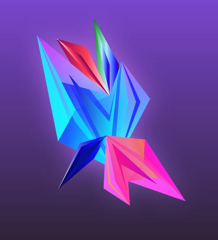

In this pencil drawing, the objects contain features that are circular and have various shades of colors. This piece of art shows how shades of color, lighting and the form of shapes may vary at different angles even though these objects are still.
This facet art was created in Adobe Illustrator with a feature called the pen tool, a tool that allows artists to create drawings in their computers. This facet consists of colorful, triangular shapes combined together to form one piece of digital art. The composition of these shapes make this facet appear abstract.
This net art was generated through codes typed into a text editor known as Atom. This sketch is an animated butterfly that moves and changes color as the user clicks on it. This is an example of how people can use codes to use their imagination and develop ways to create interactive animations.